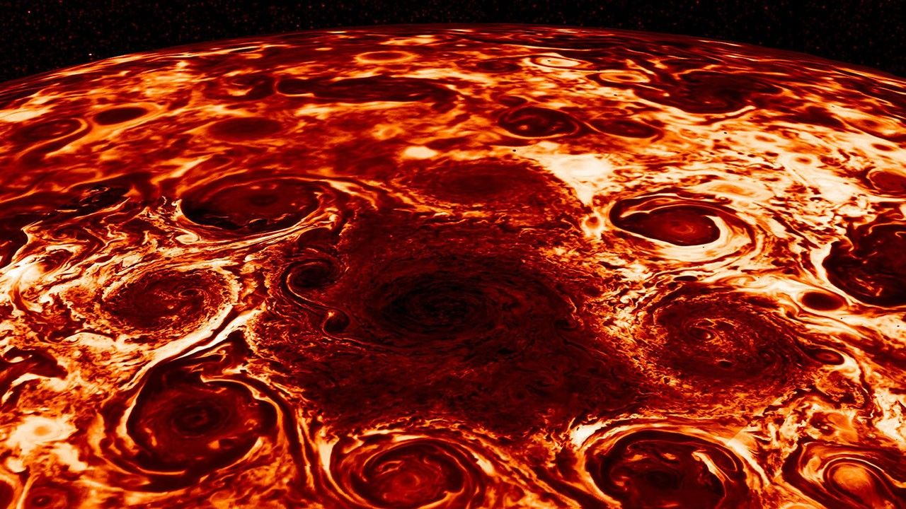

Juno is a NASA spacecraft in polar orbit around Jupiter, designed to investigate the planet’s origin, interior structure, atmospheric dynamics, and magnetic field. Part of NASA’s New Frontiers programme and built by Lockheed Martin, the spacecraft is operated by the Jet Propulsion Laboratory. Juno was launched on 5 August 2011 aboard an Atlas V 551 rocket and arrived at Jupiter on 4 July 2016 after a 35-minute engine burn placed it into a highly elliptical polar orbit.
Juno completed an Earth gravity assist on 9 October 2013, passing within 559 km of the surface to gain the velocity required to reach the outer Solar System. Its nominal polar orbit has a period of 53.5 days, with a perijove altitude of approximately 4,200 km above the Jupiter cloud tops and an apojove of roughly 8.1 million km. A planned reduction to a 14-day orbit was cancelled following concerns about a helium check valve in the propulsion system.

NASA/JPL-Caltech/SwRI/ASI/INAF/JIRAM (public domain)
Spacecraft Design
Juno is the first solar-powered spacecraft to operate in the outer Solar System. Three solar panel wings, each approximately 8.9 m long and totalling roughly 50 m² in area, generate about 486 W at Jupiter — where sunlight is approximately 25 times weaker than at Earth. A titanium radiation vault, 1 cm thick and providing a shielding factor of approximately 800×, protects the spacecraft’s electronics from Jupiter’s intense particle environment. Juno carries nine scientific instruments: the Microwave Radiometer (MWR), Magnetometer (MAG), Gravity Science experiment, JunoCam visible imager, JIRAM infrared spectrometer, Ultraviolet Spectrograph (UVS), JADE and JEDI particle detectors, and the Waves radio and plasma wave sensor.
Scientific Discoveries
Gravity Science data indicate that Jupiter’s core is diffuse and “fuzzy” rather than compact, challenging prior models of planetary formation. Microwave observations show that the planet’s banded atmospheric structure extends approximately 3,000 km below the cloud tops. At the poles, JIRAM infrared imagery reveals a stable geometric arrangement of cyclones: eight circumpolar cyclones surrounding a central cyclone at the north pole, and five at the south pole. Each cyclone spans several thousand kilometres. Juno’s magnetometer measurements show that Jupiter’s magnetic field is stronger and more spatially irregular than pre-mission models predicted, and the field exhibits secular variation — measurable change over the course of the mission. The Great Red Spot extends approximately 500 km below the visible cloud deck. Auroral electrons reach energies of around 400,000 eV, far exceeding typical values at Earth, and polar lightning has been detected at radio wavelengths distinct from equatorial lightning.
Extended Mission
Following the primary mission, Juno’s extended phase includes close flybys of Jupiter’s moons. The spacecraft flew past Ganymede in June 2021, Europa in September 2022, and Io in December 2023 and February 2024, returning the closest observations of Io’s volcanic surface in decades. The mission is planned to conclude with a deorbit into Jupiter in accordance with planetary protection requirements to prevent contamination of the icy moons.